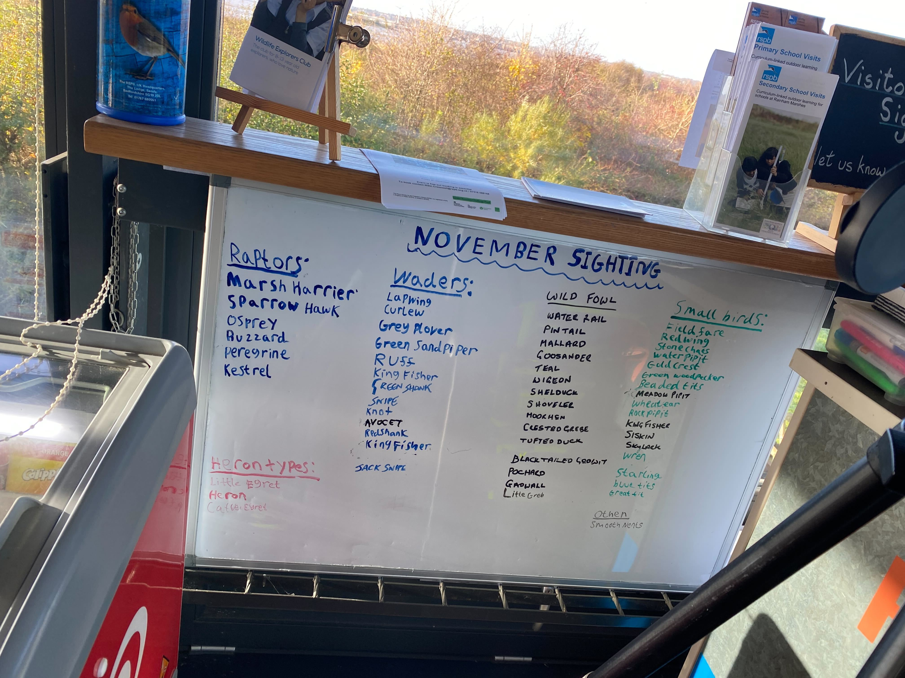

冬のレインハム（ロンドン、イギリス）で探鳥をする際のポイントを、筆者（国内ライフリスト200～250の中級バーダー）の経験に基づき記しています。
注：筆者の観察種リストは、多くの場合数時間程度の探鳥を一回きり実施した結果であり、その場所で観察可能なすべての種を網羅しているわけではありません。参考情報として記載しています。
筆者が訪れた時期：2023年11月。所見：ルートを回る形での探鳥。どのような種がみられるかは運しだいだが、情報網が発達しているので現地民を頼れば種の見逃しはないだろう。気候等：日本の冬と同じ程度には気温が下がるが、天気が良いと意外と寒くない。
このページのポイント：このページで取り上げるPSPB Rainham Marshesは、ロンドンの中心部から最も近いRSPBの野鳥保護区である。同じく中心部に近いLondon Wetland Centre（こちらはWWT: Wildfowl and Wetlands Trustが運営）よりも、レクリエーション要素が少ない保護区で、集まる人の熱意も高い。中心街からは1時間程度かかってしまうが、それでもこのような良い環境は他にはなく、ロンドン周辺では最もおすすめできる探鳥地。
ロンドンの中心部から最も近いRSPBの野鳥保護区。
水鳥は、日本と共通する種が多い。日本人にとって物珍しいのは、湿地側に生息する種だろう。けたたましく鳴くもののなかなか姿を現さないヨーロッパウグイスや、獲物を求めて低空を旋回するヨーロッパチュウヒを観察するチャンスがあるだろう。数百羽のタゲリが舞う様子も圧巻である。筆者は未見だが、類似種のいないユニークな見た目であるヒゲガラに出会えるかもしれない。
地元バーダーとRSPB職員が協力して観察記録をリアルタイムで共有しているため、タイミングが合えば、そのようなスタッフを頼って一緒にコースを回るのもよいかもしれない。
整備されたルートを一回りするのには、ゆっくり観察する場合には3時間をみておけばよい。土手から湿地を見下ろすか、ヨシの中に整備された木道を歩いて観察する。土手から見る場合は少し距離があるので、フィールドスコープや望遠レンズがあるとうれしい。地元バーダーは必ずといってよいほどスコープを持っているため、礼儀正しくお願いすれば、のぞかせてもらえるかもしれない。
筆者が訪れたのは冬であるが、渡りシーズンである初夏には、驚くような出会いがあるに違いない。熱狂的な地元バーダーに交じって、珍鳥を狙いたい。
ショップのお土産が充実しているのもうれしい。
Barking駅か、Stratford駅から、c2cに乗りPurfleet駅まで電車移動する。その後は徒歩でアクセスする。

同月に見られていた種のリスト。当然、私自身はすべての種が観察できたわけではない。
地元バーダー